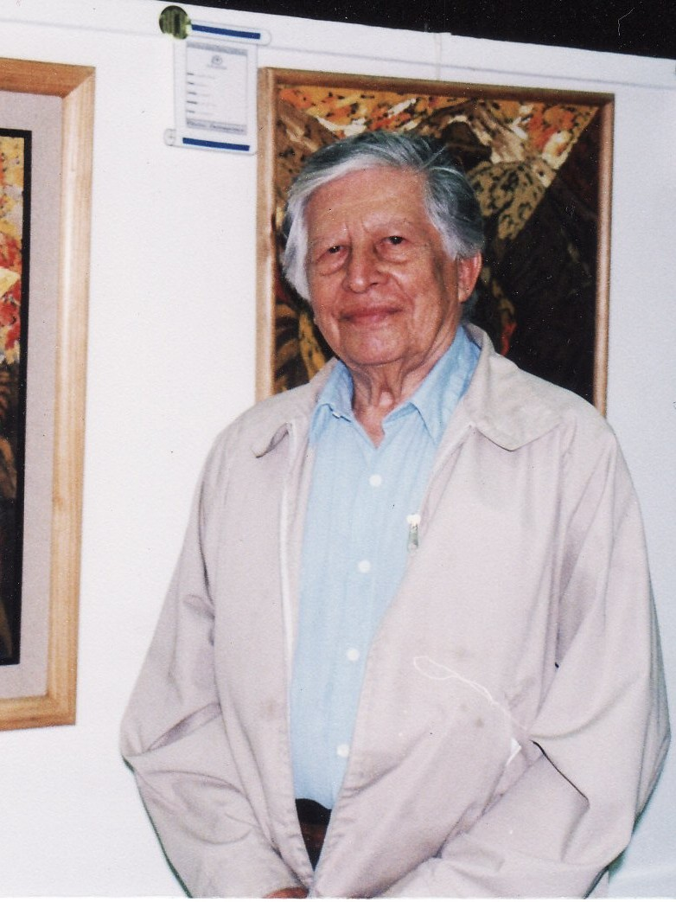
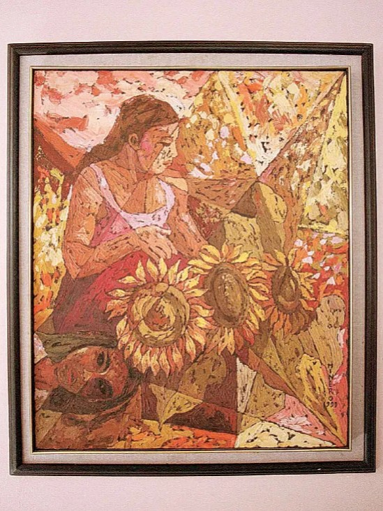
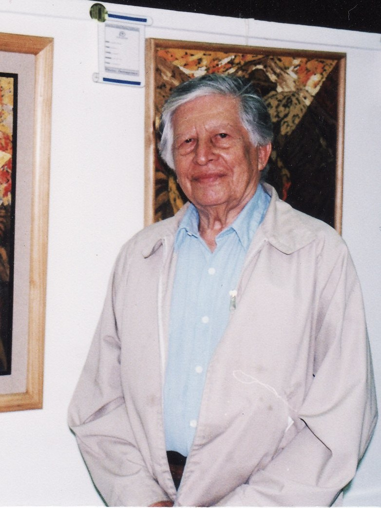
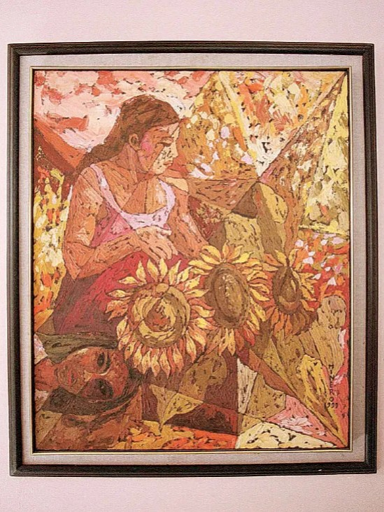

Su nombre etimológicamente en nahuat significa: “La morada de los pececitos”.
En 1814, la ciudad de Zacatecoluca protagonizó uno de los episodios más significativos del movimiento independentista salvadoreño, cuando los nonualcos se alzaron en armas, tomaron la población y obligaron a su intendente a proclamar la emancipación. Una vez lograda ésta, la creciente población de Zacatecoluca determinó que en 1823 fuera elevada a la categoría de villa, alcanzando la de ciudad en 1844. Definitivamente fue establecida por Ley como cabecera departamental el 21 de febrero de 1852 por el gobierno del Doctor Francisco Dueñas.
Municipios:
- Zacatecoluca
- Cuyultitán
- El Rosario
- Jerusalén
- Mercedes La Ceiba
- Olocuilta
- Paraíso de Osorio
- San Antonio Masahuat
- San Emigdio
- San Francisco Chinameca
- San Juan Nonualco
- San Juan Talpa
- San Juan Tepezontes
- San Luis La Herradura
- San Luis Talpa
- San Miguel Tepezontes
- San Pedro Masahuat
- San Pedro Nonualco
- San Rafael Obrajuelo
- Santa María Ostuma
- Santiago Nonualco
- Tapalhuaca


 


